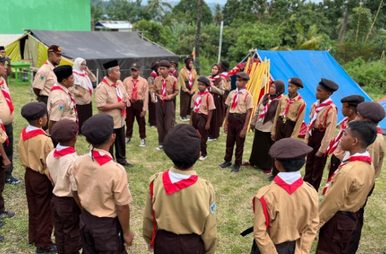
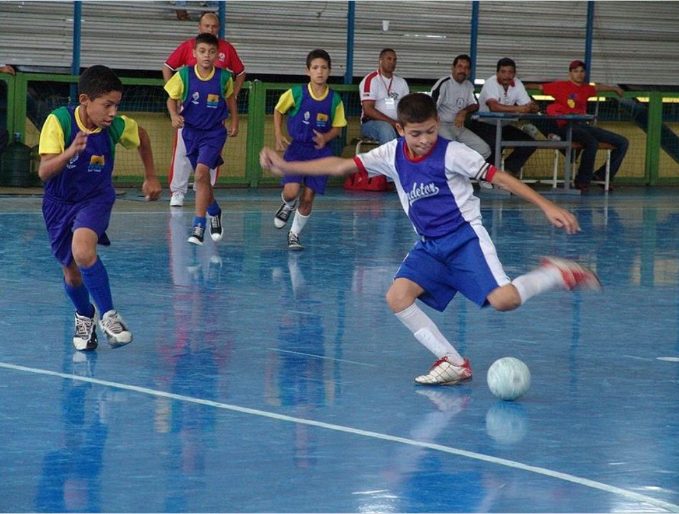
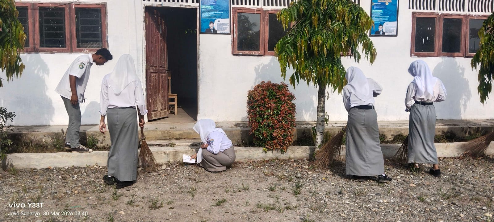
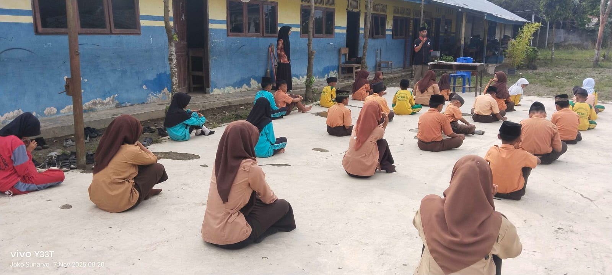
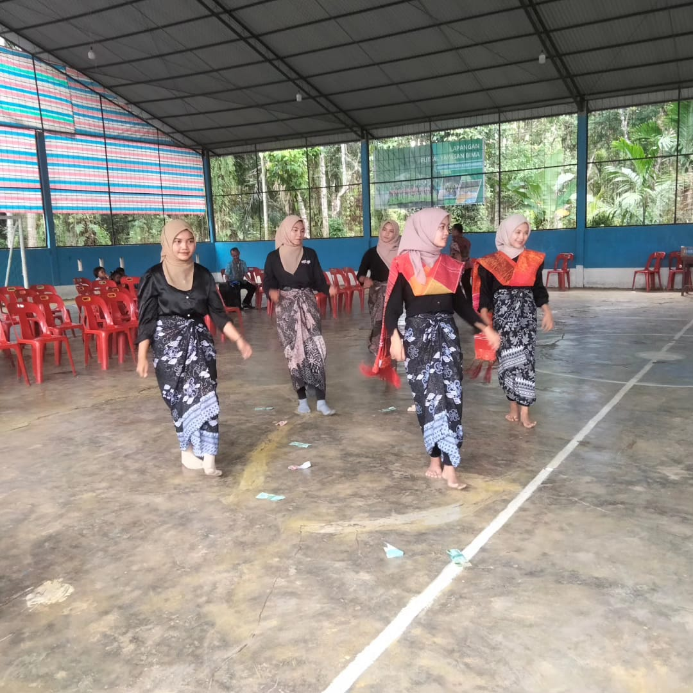
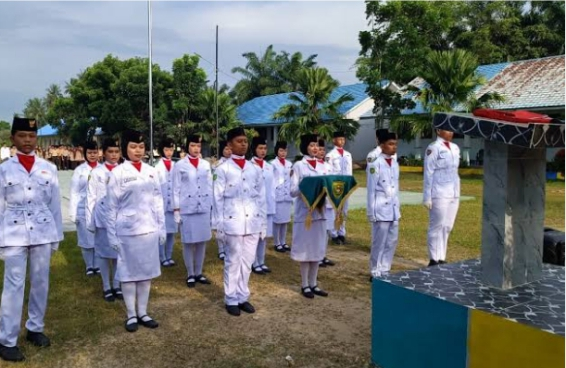
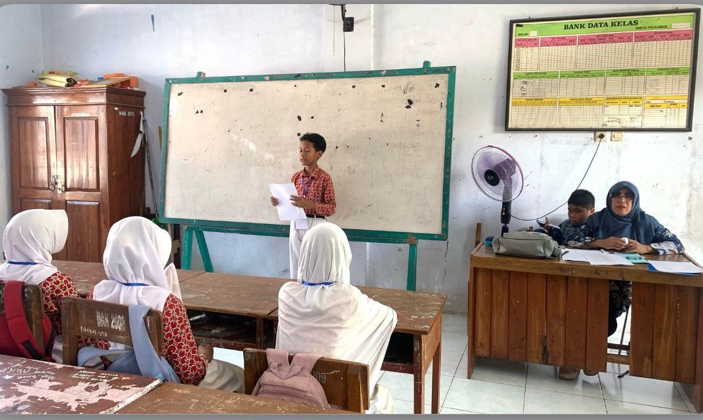

Mengembangkan Minat, Bakat dan Karakter Siswa

Membentuk karakter disiplin, mandiri dan bertanggung jawab.

Mengembangkan bakat olahraga dan kerja sama tim.

Melatih kepedulian terhadap lingkungan sekolah.

Membentuk siswa yang religius dan berakhlak mulia.

Mengembangkan bakat seni dan kreativitas siswa.

Melatih disiplin, kepemimpinan dan tanggung jawab.
Meningkatkan kemampuan membaca Al-Qur'an dengan baik.

Melatih keberanian berbicara di depan umum.